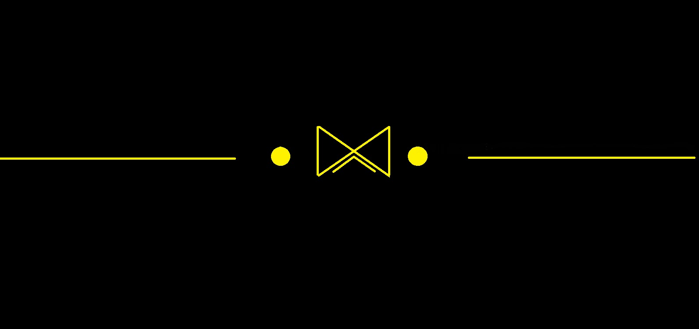
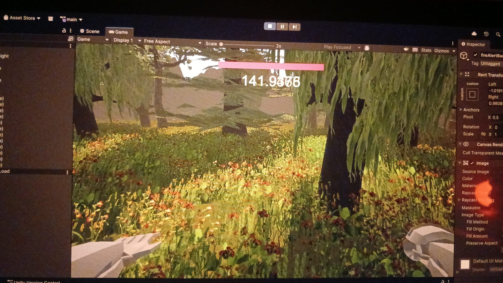
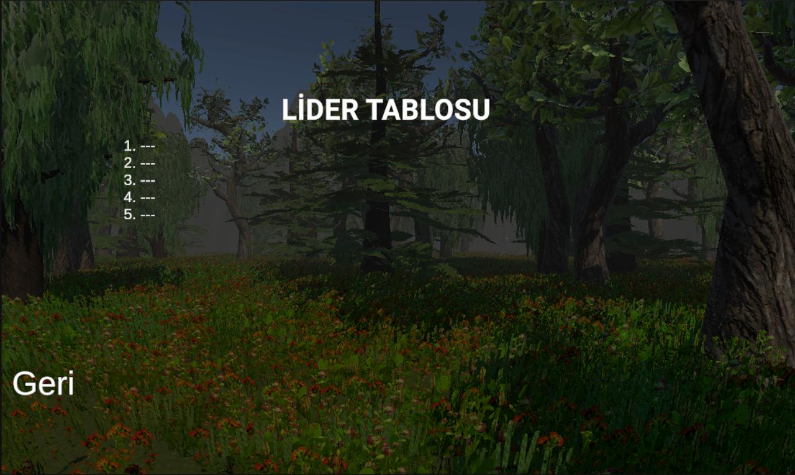
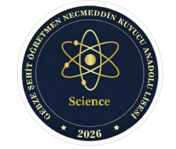
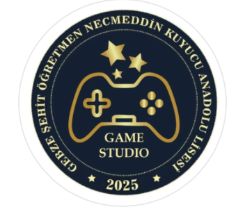

OMEGA, benim kurucusu olduğum ve yönettiğim bir holding şirketi/topluluktur. OMEGA'nın tema renkleri siyahın tonları ve sarının tonlarıdır. OMEGA'nın logosunda, siyah bir fonun tam merkezinde, tepe noktalarından birleşen iki dik üçgen ile altlarında yukarı doğru yönelmiş geniş bir açı çizgisinden oluşan altın sarısı geometrik bir amblem yer alır. Bu amblem, "OMEGA'nın sınırlandırılmış sonsuz gücünü" sembolize eder. Alttaki çizgi ise, bu kurumu havada tutan bilimi temsil eder. Bu merkez simgesinin sağ ve sol yanlarında, içi dolu birer altın sarısı daire bulunur. Bu dairelerden sağdaki, Enes Çiçek'in eşini; soldaki ise, Enes Çiçek'i temsil eder. Dairelerin dışından başlayarak görselin iki ucuna kadar uzanan düz yatay çizgiler ise insanları ve sonsuzluğa giden nüfuzlarını sembolize eder. Tüm kompozisyon siyah zemin üzerinde asil bir kontrast oluşturan altın sarısı unsurların kusursuz yatay simetrisiyle şekillenmiştir. OMEGA'nın temel amacı, ben ve benim gibilerin önünü açmak, insanlığı bilime teşvik etmektir. Bu proje, hala tamamlanmamıştır ve yaptığım en büyük projedir. OMEGA, bir platformdan da öte, insanlığa her türlü koldan yararı dokunan bir ekosistem olma özelliği taşır. Şu an bunları okuduğunuz web sayfası da OMEGA'nın bir parçasıdır. OMEGA için en büyük hayalim, insanlığı Kardashev skalasında önemli ölçüde yükseltmek, teknolojide dünyaya çağ atlatmak ve bunu yapmak isteyen diğer girişimcilerle ortak bir ağ oluşturmaktır. OMEGA'nın ilk adımı, girişim fikirlerini gerçekleştirmeyi amaçlayan OMEGA Technologies şirketidir. Bu şirketi, OMEGA Game Studios ve OMEGA Aerospace takip edecektir.

Bu IEEE formatındaki akademik makalede, Newton'un evrensel kütle-çekim yasasının yeryüzündeki kinematik denklemlerle hava direncinin ve insan eli ile yapılan ölçümlerin hata paylarının dahil edilmesi ile tutarlılığının ölçülmesi hedeflenmiştir. Bu ölçümler için bir tükenmez kalem, ufak bir kalemtıraş ve bir silgi, 30 cm ve 1 metre yüksekliklerden, kendi içlerindeki farklı yüzeyler ile serbest bırakılmasından yere çarpma anlarına kadar geçen süre ölçülmüştür. Bu süre, kinematik diferansiyel denklemlerde kullanılmış ve sonuç, kütleçekim yasasından türetilen yerçekimi ivmesi ile karşılaştırılmıştır. Sonuçlar, teorik olarak %100 tutarlı olan bu iki yaklaşımın, deneysel gözlemlerle de yaklaşık %82 oranında tutarlı olduğunu ortaya koymuştur. Teorik beklenen sonuçlar ile deneysel sonuçların farklılığının sebebinin, ölçümlerin insan eli ile yapılması olduğu düşünülmüştür. Makalenin yazımı 2 ayımı aldı ve tamamen keni şahsıma aittir. Makaleme ulaşmanız için aşağıya bir link bırakacak, çeşitli dergilerde yayınlanması durumunda da haberler sayfasında sizleri bilgilendireceğim.
Makaleye ulaşmak için buraya tıklayın
Orman Muhafızı, lisede 10. sınıfta TÜBİTAK 4006 Bilim Fuarları Destekleme Programı kapsamında ŞÖNKAL Game Studio ekibi ile yaptığımız bir video oyunudur. Bu proje, aynı zamanda benim oyun sektörüne attığım ilk somut adımdır. Saygıdeğer arkadaşım Asım ÖZKAN, bu projenin yöneticiliğini üstlenmiş ve bana oyunun ana menüsü ve leaderboard sistemini yapmam için şans tanımıştır. Bu, benim oyun sektörüne teşvik edilmeme sebep olmuştur. Zaten küçüklüğünden beridir oyun oynamayı seven birisi olarak, Orman Muhafızı adeta bir kilometretaşı olmuştur benim için. Unity Engine kullanarak yaptığımız oyunu, fuar sırasında onlarca kişi denemiş ve çok beğenmiştir. Öyle ki, oyuncular arası rekabet beklediğimizden daha fazla olmuştur. Arkadaşım Zeynep Yağmur SUSAM da projedeki assetleri yapmıştır.


ŞÖNKAL Science, saygıdeğer arkadaşım Rüzgar VATANSEVER ile birlikte kurduğumuz, lisemizdeki diğer arkadaşlarımızı bilime ve teknolojiye teşvik etmek, popüler bilim yazarlığına teşvik etmek amacına sahip bir öğrenci kulübüdür. bu kulüpte, Instagram ağırlıklı olarak gönderiler yayınlamaktayız. Bu proje ile birlikte okulumuzda bilim kültürü oluşturmayı amaçlıyoruz. ŞÖNKAL Science Instagram Hesabı üzerinden paylaşımlarımıza ulaşabilirsiniz.

ŞÖNKAL Game Studio, saygıdeğer arkadaşlarım Asım Özkan ve Zeynep Yağmur SUSAM ile birlikte kurduğumuz, lisemizdeki diğer arkadaşlarımızı oyun sektörüne çekmek, girişimcilik konusunda fikir vermek ve oyun yapımıyla ilgili teşvikler oluşturmak için kurduğumuz öğrenci kulübüdür. Okuldaki ve okul dışındaki projelerde oyun tasarımı konusunda yer alan kulübümüz, okulumuzu akademik anlamda yükseltmeyi hedefleyen bir proje haline gelmiştir. ŞÖNKAL Game Studio Instagram Hesabı üzerinden paylaşımlarımıza ulaşabilirsiniz.
